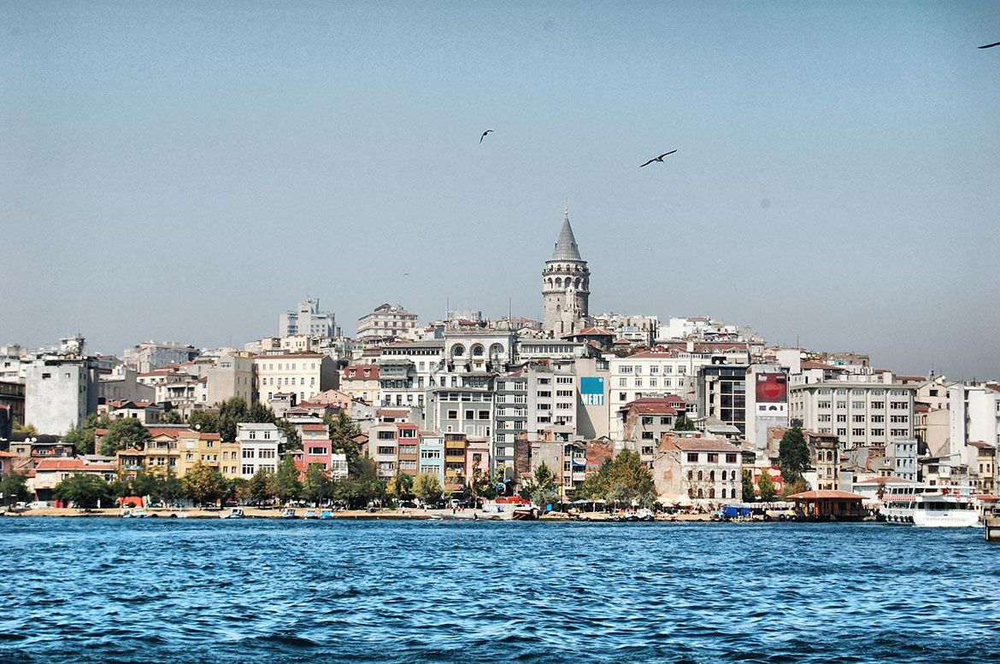
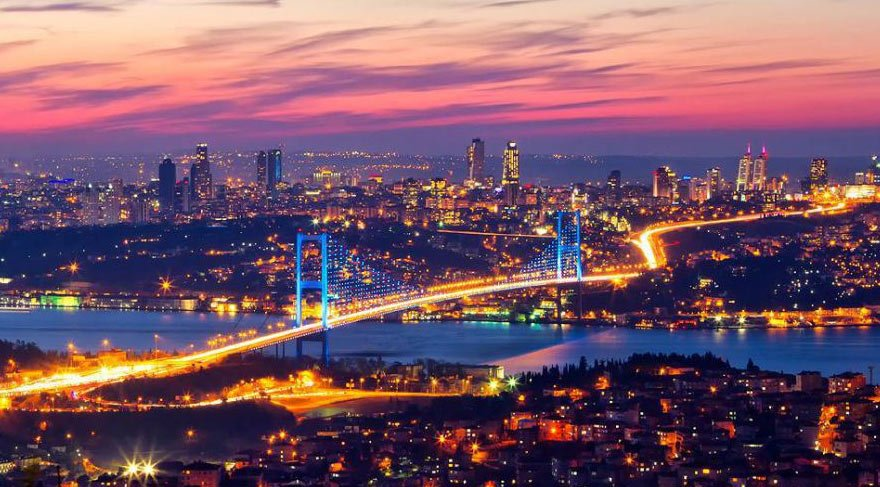
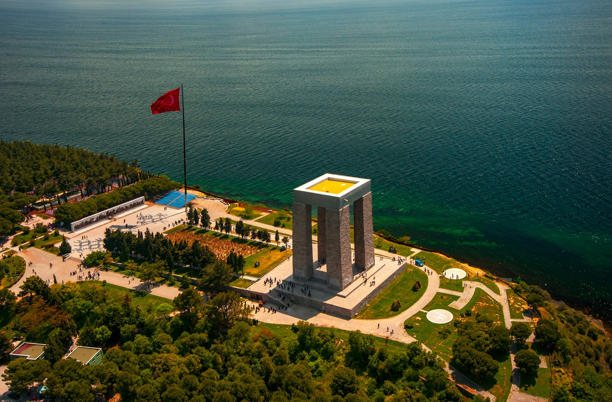
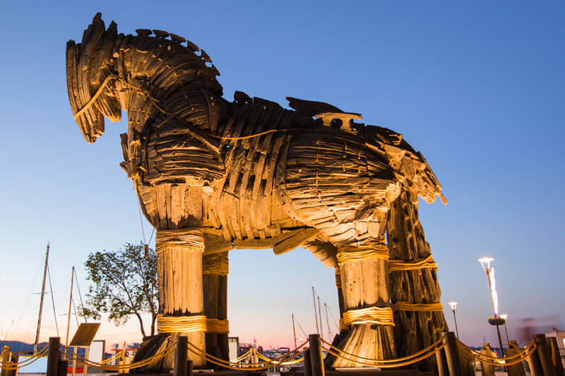
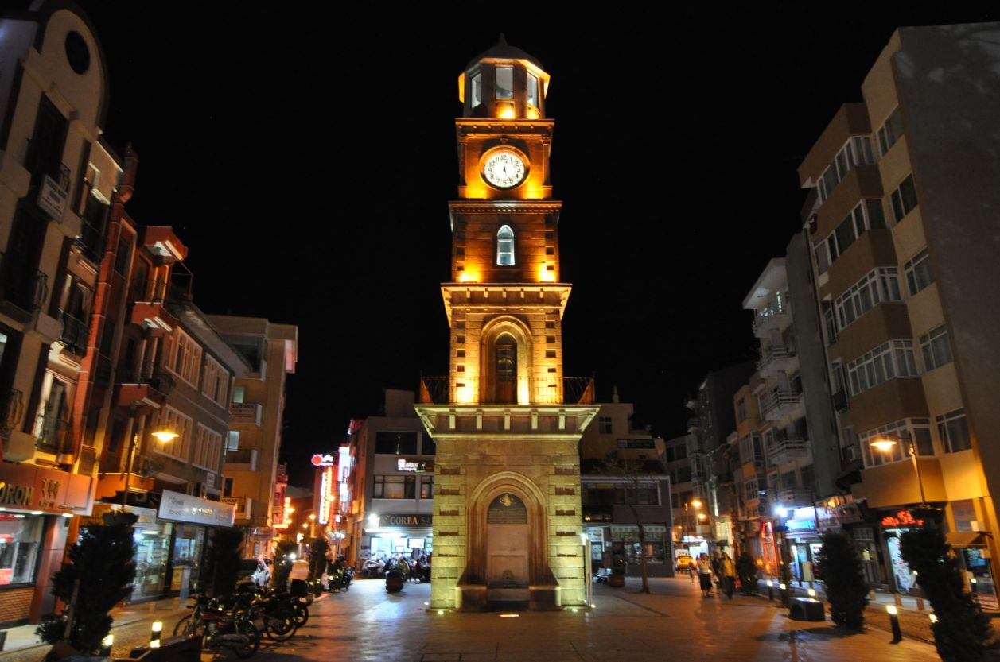
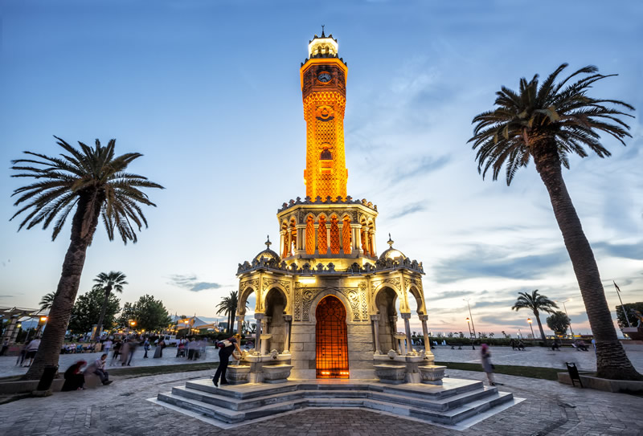
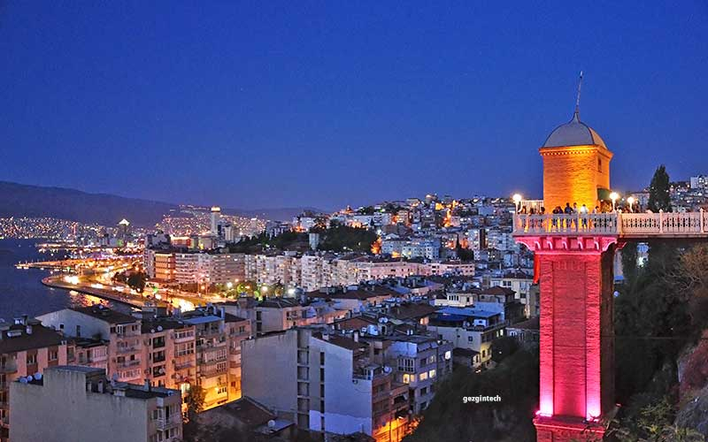
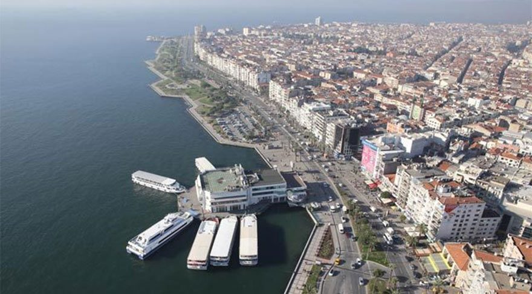

Hanifi Polat
Anasayfa
Resimlerimiz
Hakkımızda
Referanslarımız
Blog
Şartlar
Projelerim
İletişim
Ara
Resimleriniz bizimle her zaman güvende hızlı yükleme ve hızlı indirme imkanlarıyla

Bir zamanlar İsa kulesi olarak adlandırılan Galata Kulesi’nin yapım tarihi tam olarak bilinmiyor

Boğaziçi Köprüsü, resmî adıyla 15 Temmuz Şehitler Köprüsüdür
İstanbul seyahatte avrupada ilk üçte

Bu destanın kahramanlarının ebediyen unutulmaması için yapılmıştır.

Truva Atı efsanesi yüzyıllardır dilden dile dolaşmaktadır

Sultan II.Abdülhamid döneminde 1897-1898 yılında Cemil Paşa tarafından yaptırılmıştır.

İzmir’in Konak ilçesinde bulunur ve boyu 25 metre uzunluğundadır.

2016 TÜİK verilerine göre İzmir'in nüfusu 4.223.545'tir

İzmir, Türkiye'nin bir ili ve en kalabalık üçüncü şehri.
>